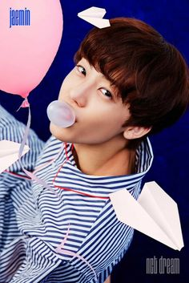
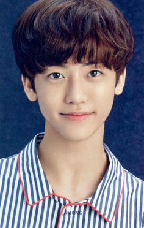
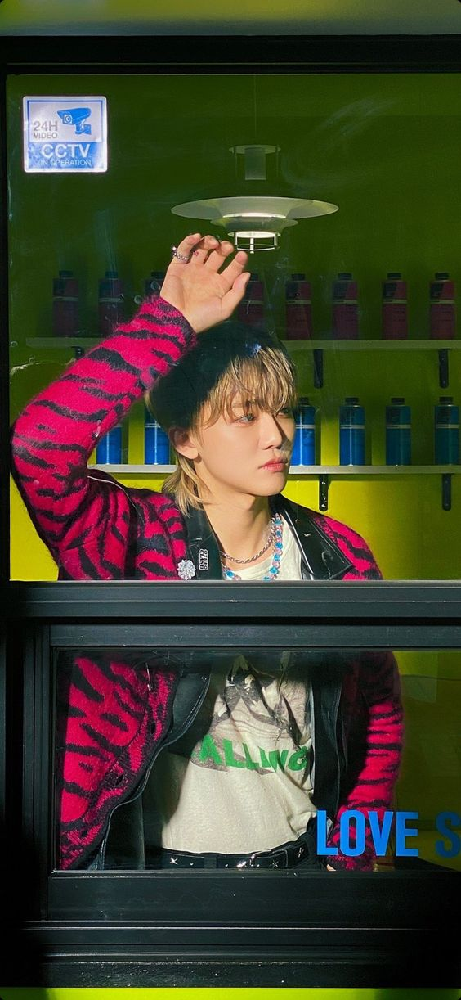
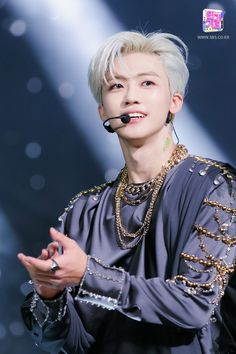
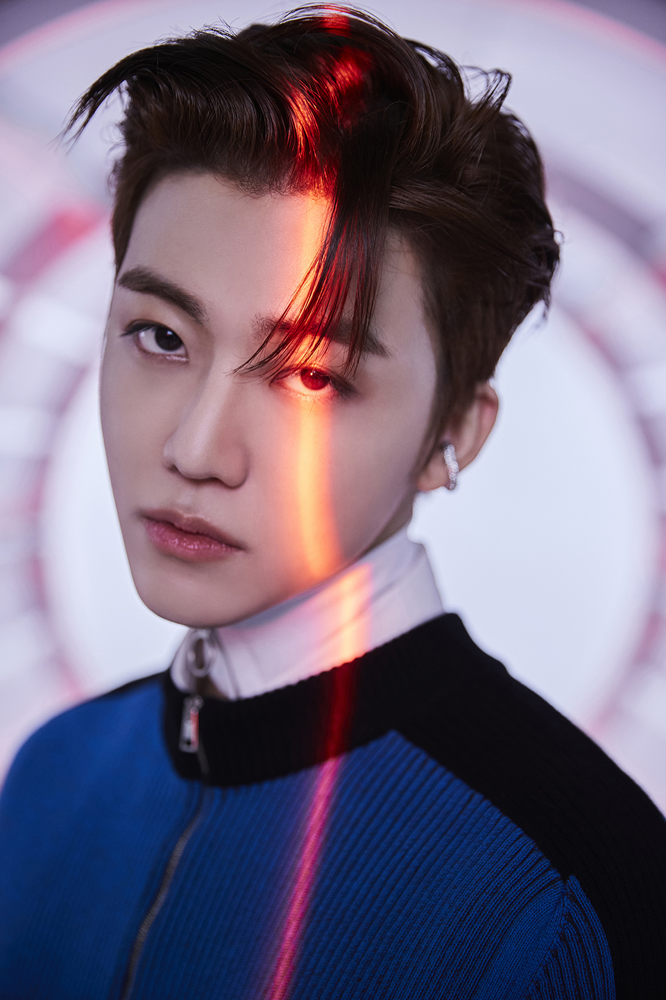
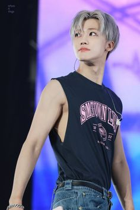

Pada tahun2014 jaemin diperkenalkan SM Entertaimen sebagai bagian dari peserta pelatihan SM Entertaiment. Jaemin mengungkapkan bahwa pada awal masa pelatihannya, ia bukan peserta pelatihan yang memiliki perkembangan yang baik. Ia mulai bersemangat berlatih setelah melihat teman-teman peserta pelatihan lainnya menunjukkan progress yang baik sejak masuk SM Entertainment. Jaemin kemudian resmi diumumkan sebagai bagian dari SM Rookies pada 22 April 2015 pada saat dirinya berusia 15 tahun. Di tahun yang sama Jaemin muncul dalam acara The Micky Mouse Club di Disney Channel Korea sebagai Mouseketeer bersama anggota lain dari tim SM Rookies.
Pada 18 Agustus 2016, Jaemin diumumkan sebagai bagian dari unit ketiga dan termuda NCT, yakni NCT Dream, bersama Mark, Renjun, Jeno, Haechan, Chenle, dan Jisung. NCT Dream debut dengan lagu Chewing Gum. NCT Dream langsung menarik perhatian dengan penampilan para anggota yang segar dan baru. Di tahun 2017, Jaemin sempat hiatus karena masa pemulihan dari penyakit yang dideritanya akibat cedera tulang belakang (spinal disc herniaton), sehingga Jaemin tidak akan mengikuti promosi comeback pertama NCT Dream dengan single album The First dan berlanjut hingga promosi album mini NCT Dream berikutnya, We Young.
Pada 4 Maret 2018, Jaemin kembali sebagai anggota NCT Dream dalam comeback mereka dengan lagu "Go" sebagai bagian dari album NCT 2018 Empathy. Ini merupakan comeback pertama Jaemin. Selain itu, Jaemin juga ambil bagian dalam lagu "Black on Black" dengan tujuh belas anggota NCT lainnya yang dirilis April 2018. Pada comeback NCT Dream selanjutnya, Jaemin kembali bergabung dengan mini album We Go Up dan berpartisipasi dalam pembuatan lirik lagu.
Pada tahun 2019, Jaemin bersama Jeno dan Jisung mewakili idola K-pop dalam acara "K-Wave & Halal Show" di Malaysia. Jaemin juga menjalani debutnya sebagai aktor dalam serial televisi "Method To Hate You" yang diadaptasi dari Webtun yang sama sebagai pemeran utama, Han Dae-gang. Jaemin berpartisipasi dalam gaming variety show Do You Want To Play? GG, di mana para selebriti membentuk tim yang bertanding dengan murid-murid SMA. Di tahun yang sama, NCT Dream mengeluarkan mini album ketiganya yang bertajuk We Boom (album mini) di mana Jaemin juga berpartisipasi dalam penulisan liriknya.
NCT Dream melakukan comeback dengan mini albumnya yakni Reload dengan lagu utama Ridin. Pada Oktober 2020, Jaemin debut sebagai anggota NCT U melalui video musik "Make A Wish (Birthday Song)' dari album megaproyek NCT 2020 Resonance Pt.1 setelah berpartisipasi dalam penampilan spesial NCT U "Kick and Ride" pada Juni 2020. Pada album kedua NCT 2020 Resonance Pt. 2, Jaemin ambil bagian dalam lagu bernuansa musik dansa elektronik berjudul "Work It" bersama Ten, Johnny, Jisung, Hendery, Jungwoo, dan Yuta.
Pada 10 Mei 2021, NCT Dream kembali untuk pertama kalinya dalam dua tahun dengan tujuh anggota dan menandai kembalinya Mark Lee ke grup tersebut. Mereka merilis album panjang pertama mereka yang bertajuk Hot Sauce. Jaemin ikut serta dalam penulisan lirik lagu Rainbow, bersama tiga anggota lain, yakni Mark, Jeno, dan Jisung. , NCT Dream mengeluarkan album repackaged pada 28 Juni 2021 berjudul Hello Future dengan menambahkan 3 lagu baru dari album sebelumnya. Selama periode tersebut, NCT Dream melakukan berbagai promosi, termasuk merilis penampilan Boom dan Ridin dengan tujuh anggota. Bersama dengan lima anggota NCT Dream lainnya, Jaemin ikut serta dalam acara Boys Mental Training Camp Diarsipkan 2022-01-04 di Wayback Machine.Sebagai kegiatan individu, Jaemin menjalin kerja sama dengan Adobe Korea dengan merilis video bertajuk "Nana's Joyful Day" pada 26 Agustus 2021 di akun Youtube resmi NCT. Pada 6 Oktober, Jaemin berkolaborasi dengan jenama eksklusif Tom Ford dan fotografer fesyen kenamaan Adam Katz Sinding untuk edisi spesial kedua WWD Korea. Jaemin diumumkan sebagai bagian dari unit U NCT bersama Jeno, Mark Lee, Haechan, Doyoung, Jungwoo, Xiaojun, Yangyang, dan Shotaro. Mereka merilis video musik pada 10 Desember dengan lagu yang bertajuk Universe (Let's Play Ball). Selain itu, Jaemin dan 21 anggota lainnya berpartisipasi dalam lagu Beautiful yang video musiknya dirilis bersamaan dengan albumnya pada 14 Desember 2021. Bersama dengan NCT Dream, Jaemin juga turut berpartisipasi dalam lagu Dreaming. Ia juga ambil bagian dalam lagu Know Now dan Birthday Party.
Jaemin dan NCT Dream merilis album kedua bertajuk Glitch Mode pada 28 Maret 2022. Penjualan album melonjak melebihi Hot Sauce hingga mencapai rekor grup sejak debutnya. Pada 30 Mei 2022, grup kembali merilis album repackage bertajuk Beatbox dengan empat lagu tambahan. Jaemin berpartisipasi sebagai salah satu penulis lirik dalam lagu "Its Yours" bersama Mark, Jeno, dan Jisung. Jaemin dan NCT Dream menjalankan masa promosi yang mengesankan mengingat untuk pertama kalinya grup promosi secara lengkap dalam empat album berturut-turut. NCT Dream juga mengadakan The Dream Show 2: In A Dream yang direncanakan akan diselenggarakan di beberapa lokasi di dunia.